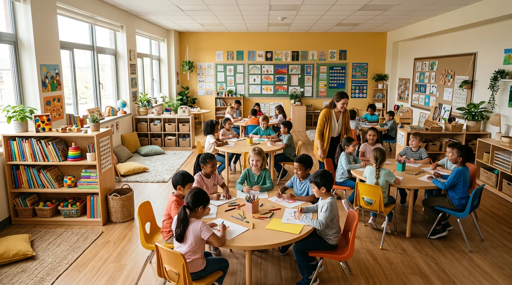
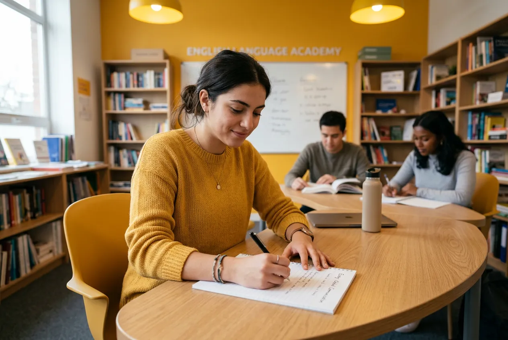
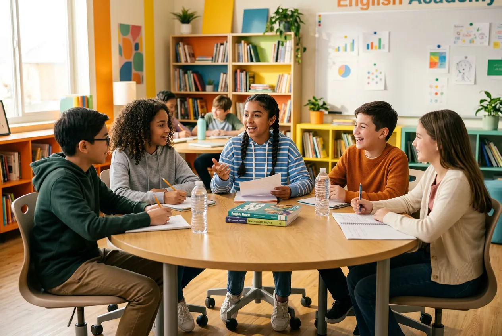
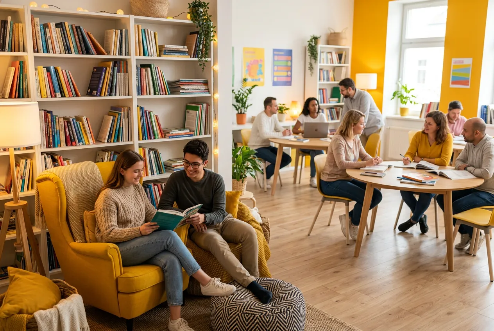
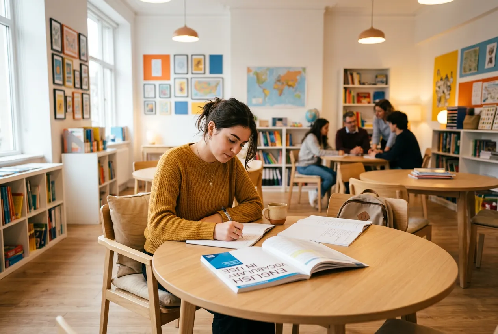
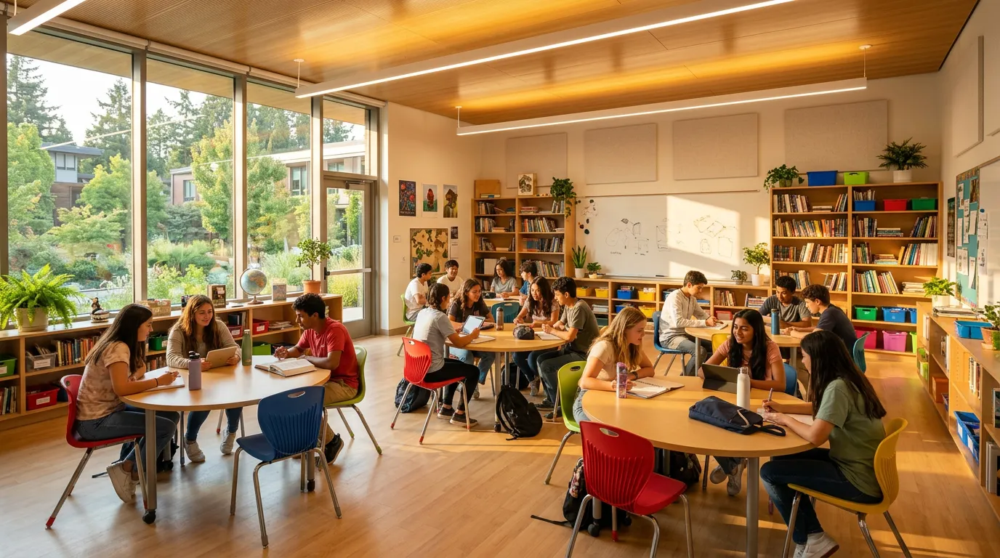

FlowEnglish Studio · Since 2018
영어가 아닌,
생각을 말하는 아이로
스스로 생각하고 표현하는 힘을 키우는
소규모 몰입형 영어 수업
Student Voices
아이의 변화를
직접 들어보세요
3개월, 6개월, 1년 — 시간이 지날수록
선명해지는 아이의 목소리
"처음엔 'I like pizza'밖에 못 했는데,
지금은 제 생각을 영어로 설명해요"
김서윤 · Junior Speaking · 6학년
"영어 책 읽는 게
이제 재미있어졌어요"
이도현 · Kids English · 3학년

"에세이 쓸 때 영어로
생각하는 습관이 생겼어요"
박지민 · Academic Writing · 중2
책장 사이에서
세계를 만나다
영어는 교과서가 아니라 세상을 여는 언어입니다
Programs
아이에게 맞는
영어를 찾아드립니다
연령과 수준에 따라 설계된 맞춤형 프로그램
Kids English
그림책과 놀이로 시작하는 영어 첫걸음. 자연스러운 발화를 유도하는 몰입형 수업.
월 ₩280,000

Junior Speaking
토론과 발표 중심의 실전 스피킹. 원어민 선생님과 매일 대화하며 자신감을 키웁니다.
월 ₩380,000
Why FlowEnglish
"반 정원 최대 6명,
모든 아이가 매 수업
말할 수 있도록"
Academic Writing
논리적 에세이 작성과 비판적 사고력을 키우는 상위반. 국제학교 및 특목고 준비에 최적화.
월 ₩450,000
어떤 프로그램이
우리 아이에게 맞을까요?
Our Space
이 공간에서
영어가 자연스러워집니다
소규모 라운지, 토론 테이블, 영어 서재 — 교실이 아닌 생활 공간

영어 서재
1,200권의 영어 원서가 있는 아늑한 독서 공간
토론 라운지
6명 원형 테이블에서 자유롭게 의견을 나누는 공간
수업 교실
넓은 창과 자연광이 들어오는 쾌적한 학습 환경
프레젠테이션 존
발표와 스피치 연습을 위한 소규모 무대 공간
Our Team
아이를 가장 잘 아는
선생님들
원어민 + 이중언어 팀이 매일 아이와 대화합니다
Sarah
Mitchell
NYU TESOL 석사, 12년 경력. 아이의 눈높이에서 대화하며 자연스러운 발화를 이끌어내는 전문가.
Kids English · Junior Speaking 담당
김동현
UCLA 영문학 전공, 한영 이중언어 구사. 한국 학생의 약점을 정확히 파악해 맞춤 피드백을 제공합니다.
Junior Speaking · Academic Writing 담당
Emily
Dawson
Columbia MFA 졸업, 아동 문학 작가. 글쓰기를 통해 아이의 창의적 사고력과 표현력을 키워줍니다.
Academic Writing · Creative Program 담당
Parents Say
부모님이
안심하는 이유
"아이가 영어를 싫어했는데, 여기 다니면서 자기 입으로 '오늘 수업 재밌었어'라고 말하더라고요. 소규모라 선생님이 아이를 정말 잘 봐주세요."
최수정
Kids English · 3학년 학부모
"매월 오는 학습 리포트가 정말 상세해요. 아이가 어떤 부분이 부족한지, 어떻게 나아지고 있는지 구체적으로 알 수 있어서 안심이 됩니다."
박은영
Junior Speaking · 6학년 학부모
"국제학교 면접 준비를 여기서 했는데, 선생님들이 1:1로 정말 꼼꼼하게 봐주셨어요. 결국 합격했습니다. 감사합니다."
이정민
Academic Writing · 중2 학부모
FAQ
자주 묻는 질문
입학 전 궁금한 점을 모았습니다.
더 자세한 내용은 전화 상담을 통해 안내드립니다.

모든 반은 최대 6명으로 운영됩니다. 아이 한 명 한 명에게 충분한 발화 기회를 보장하기 위해 정원을 엄격히 관리하고 있습니다.
15분간의 1:1 영어 대화 + 10분간의 리딩/라이팅 진단으로 구성됩니다. 테스트 후 아이의 현재 수준과 추천 프로그램을 상세히 안내드립니다. 무료로 진행됩니다.
매월 1회 학습 리포트를 발송합니다. 스피킹/리딩/라이팅 영역별 성장 지표와 수업 참여도, 선생님 코멘트가 포함됩니다. 분기별 1:1 학부모 상담도 진행합니다.
네, 1회 무료 체험 수업을 제공합니다. 레벨 테스트 후 추천 반에서 실제 수업에 참여해볼 수 있습니다. 전화 또는 온라인으로 예약해주세요.
평일 오후 3시~8시, 토요일 오전 10시~오후 2시에 운영합니다. 프로그램별로 주 2~3회 수업이며, 시간표는 상담 시 자세히 안내드립니다.
자체 제작 교재와 원서를 사용하며, 수업료에 포함되어 있습니다. 추가 구매가 필요한 교재는 없습니다.

Start Here
첫 수업이
시작을 바꿉니다
무료 체험수업으로 아이의 가능성을 확인해보세요
Address
서울 강남구 대치동 912-8
에메랄드빌딩 5층
Hours
평일 15:00 – 20:00
토요일 10:00 – 14:00
Consultation
전화 상담 수시 가능
방문 상담 예약제